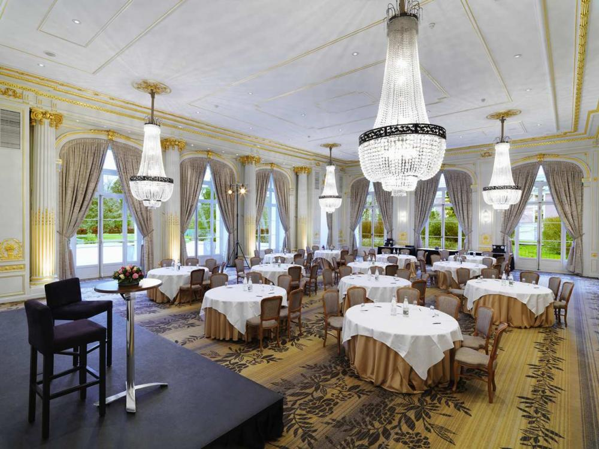
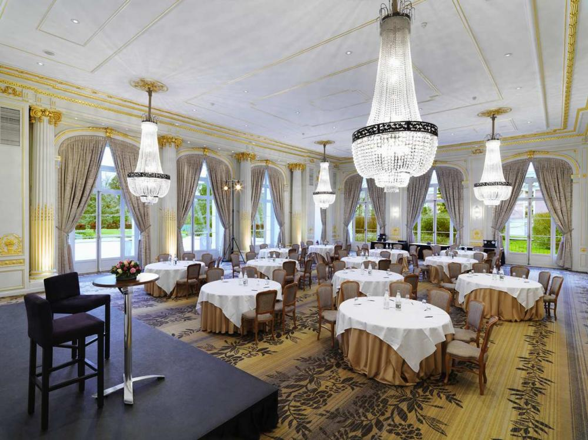

*** ATRAÇÕES DA CIDADE ***

CRISTO REDENTOR
"O CRISTO REDENTOR principal ponto turístico do Rio de Janeiro, o Cristo Redentor está localizado há 710 metros de altitude. O local possui uma vista panorâmica incrível da cidade e se destaca em vários pontos da cidade. O Cristo abençoa o céu e o povo carioca desde 13 de agosto de 1931 e, ao contrário do que muitos dizem, não foi um presente dos franceses para os brasileiros. Na verdade, uma campanha de arrecadação que durou 10 anos, foi responsável por angariar fundos para a mega obra."
PAO DE AÇUCAR
"PAO DE AÇUCAR - Com 395 metros de altura, o Pão de Açúcar é outro importante ponto turístico do Rio de Janeiro. O local conta com um bondinho que leva os visitantes a terem uma incrível vista aérea da cidade e de toda as suas belezas naturais."
SANTA TEREZA
"SANTA TEREZA é um dos bairros mais queridinhos dos cariocas, perfeito para passar uma deliciosa tarde na cidade. Além de contar com vistas belíssimas, devido à sua localização no alto de uma serra, o bairro remete ao “Rio de Janeiro antigo”, com seu ar bucólico, bastante cultura, além dos bondinhos – sua marca registrada. Além disso, Santa Teresa é bastante conhecida também pela forte presença de intelectuais, artistas, acadêmicos entre outros, que procuram por passeios históricos e culturais, como visitas aos tradicionais ateliês. Não deixe de conhecer pontos como a Escadaria Selarón, o Parque das Ruínas e o Museu da Chácara do Céu."
 
